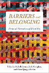
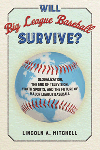

 |
Barriers and Belonging
Personal Narratives of Disability
Edited by Jarman, Michelle, Leila Monaghan, and Alison Quaggin Harkin
A collection of personal narratives that asks, Why does disability studies matter?
286 pp • 6x9 • Fall 2016
paper 978-1-4399-1388-8
cloth 978-1-4399-1387-1 |
|
Boathouse Row
Waves of Change in the Birthplace of American Rowing
Brown, Dotty
A magisterial history of Philadelphia's iconic Boathouse Row
288 pp • 10x8 • Fall 2016
cloth 978-1-4399-1282-9 |
|
Building Drexel
The University and Its City, 1891-2016
Edited by Dilworth, Richardson and Scott Gabriel Knowles
The first comprehensive history of Drexel University in Philadelphia
400 pp • 6x9 • Fall 2016
cloth 978-1-4399-1420-5 |

|
Caribbean Currents
Caribbean Music from Rumba to Reggae
Third Edition
Manuel, Peter with Michael Largey
The classic introduction to the Caribbean's popular music brought up to date
368 pp • 6x9 • Fall 2016
paper 978-1-4399-1400-7
cloth 978-1-4399-1399-4
|
|
Consuming Catastrophe
Mass Culture in America's Decade of Disaster
Recuber, Timothy
Examines the media's coverage of four American disasters, arguing that media attention directs our concern for the suffering of others toward efforts to soothe our own emotional turmoil
212 pp • 5.5x8.25 • Fall 2016
paper 978-1-4399-1370-3
cloth 978-1-4399-1369-7 |
|
The Death and Life of the Single-Family House
Lessons from Vancouver on Building a Livable City
Lauster, Nathanael
A detailed study of how Vancouver moved away from the single-family house and the effects of this transformation, detailed by interviews with residents
262 pp • 6x9 • Fall 2016
paper 978-1-4399-1394-9
cloth 978-1-4399-1393-2 |
|
Deregulating Desire
Flight Attendant Activism, Family Politics, and Workplace Justice
Murphy, Ryan Patrick
How flight attendants have drawn on feminist and LGBTQ activist legacies to challenge big business's rise to power after 1970
252 pp • 6x9 • Fall 2016
paper 978-1-4399-0989-8
cloth 978-1-4399-0988-1 |
|
Four Germanys
A Chronicle of the Schorcht Family
Pitkin, Donald S.
Foreword by John C. Torpey
Charting the transformation of East Germany through the lens of one town
and one multi-generational family
312 pp • 6x9 • Fall 2016
paper 978-1-4399-1343-7
cloth 978-1-4399-1342-0 |
|
The Gendered Executive
A Comparative Analysis of Presidents, Prime Ministers, and Chief Executives
Edited by Martin, Janet M. and MaryAnne Borrelli
Examining national executives through the lens of identity, representation, and power
274 pp • 6x9 • Fall 2016
paper 978-1-4399-1364-2
cloth 978-1-4399-1363-5 |
|
Getting Paid While Taking Time
The Women's Movement and the Development of Paid Family Leave Policies in the United States
Sholar, Megan A.
Analyzing family leave policy in the United States—from the role of the women's movement in the passage of paid leave to policymaking at the state level
252 pp • 5.5x8.25 • Fall 2016
paper 978-1-4399-1295-9
cloth 978-1-4399-1294-2 |
|
The Great Refusal
Herbert Marcuse and Contemporary Social Movements
Edited by Lamas, Andrew T., Todd Wolfson, and Peter N. Funke
With a foreword by Angela Y. Davis
An in-depth examination of the relevance of Marcuse's writing for today's social movements
410 pp • 6x9 • Fall 2016
paper 978-1-4399-1304-8
cloth 978-1-4399-1303-1 |

|
The Mutual Housing Experiment
New Deal Communities for the Urban Middle Class
Szylvian, Kristin M.
How the sale of World War II public housing to non-profit mutual home-ownership associations represents a road not taken in federal housing policy
New in Paperback!
294 pp • 6x9 • Fall 2016
paper 978-1-4399-1206-5
|
|
New Advances in the Study of Civic Voluntarism
Resources, Engagement, and Recruitment
Edited by Klofstad, Casey A.
Cutting-edge research by prominent social scientists on new topics and methods of inquiry in the field of civic participation
288 pp • 6x9 • Fall 2016
paper 978-1-4399-1325-3
cloth 978-1-4399-1324-6 |

|
Red War on the Family
Sex, Gender, and Americanism in the First Red Scare
Ryan, Erica J.
How the Red Scare contributed to sexual conformity in the United States
New in Paperback!
234 pp • 6x9 • Fall 2016
paper 978-1-4399-0885-3 |
|
Resurrecting Slavery
Racial Legacies and White Supremacy in France
Fleming, Crystal Marie
Revealing how the histories of slavery and colonialism are being resurrected and racialized in France today
286 pp • 6x9 • Fall 2016
paper 978-1-4399-1409-0
cloth 978-1-4399-1408-3 |
|
Risking Life and Lens
A Photographic Memoir
Stummer, Helen M.
A poignant memoir of a woman who documented social injustice with her camera
254 pp • 6x9 • Fall 2016
paper 978-1-4399-1457-1
cloth 978-1-4399-1456-4 |
|
Sesqui!
Greed, Graft, and the Forgotten World''s Fair of 1926
Keels, Thomas H.
It was meant to be the greatest world's fair of all time—but it ended up as the "Flop Heard 'Round the World"
376 pp • 6x9 • Fall 2016
cloth 978-1-4399-0329-2 |
|
Sex and the Founding Fathers
The American Quest for a Relatable Past
Foster, Thomas A.
How public curiosity about the "real" Founders has influenced the stories we tell and remember
New in Paperback!
232 pp • 6x9 • Fall 2016
paper 978-1-4399-1103-7
|

|
Suicide Squeeze
Taylor Hooton, Rob Garibaldi, and the Fight against Teenage Steroid Abuse
Kashatus, William C.
A heartbreaking story of steroids-related suicides by two promising young amateur baseball players that mobilized Major League Baseball's campaign against steroid use
256 pp • 6x9 • Fall 2016
cloth 978-1-4399-1438-0 |
 |
Will Big League Baseball Survive?
Globalization, the End of Television, Youth Sports, and the Future of Major League Baseball
Mitchell, Lincoln A.
A cogent analysis of the future of big league baseball in the context of a changing media, economic, and social environment
208 pp • 5.5x8.25 • Fall 2016
paper 978-1-4399-1379-6
cloth 978-1-4399-1378-9 |
|
Young Men, Time, and Boredom in the Republic of Georgia
Frederiksen, Martin Demant
An in-depth look at urban youth in the Republic of Georgia offering new perspectives on how time and marginality are interlinked
New in Paperback!
212 pp • 6x9 • Fall 2016
paper 978-1-4399-0919-5 |
Click here to download the catalog (pdf). |